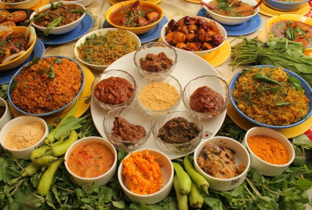
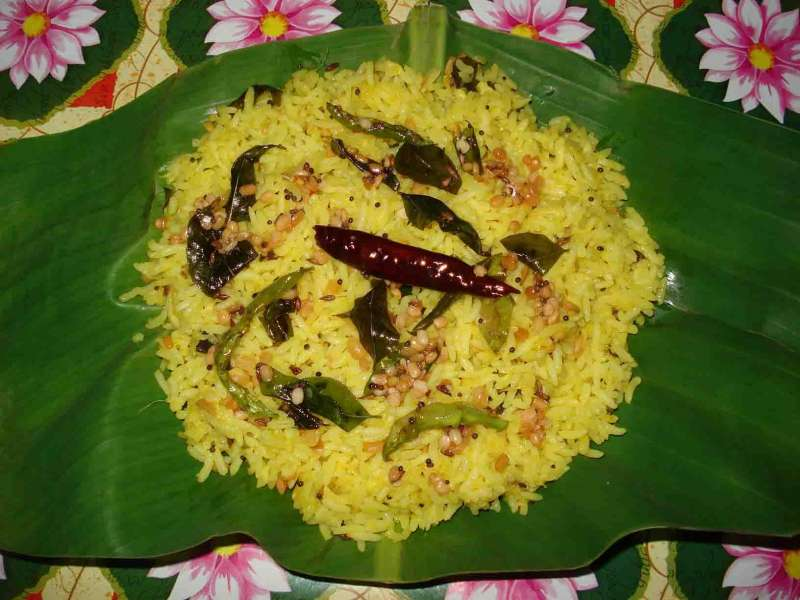
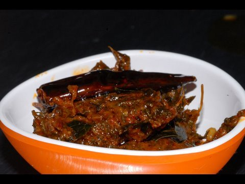
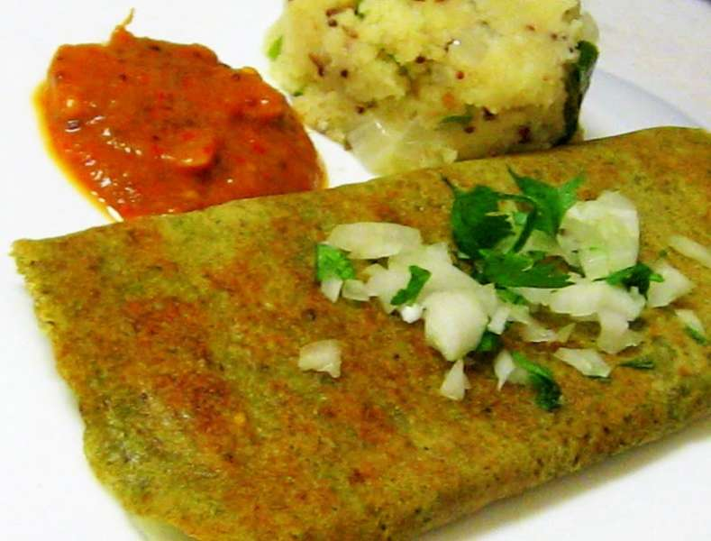
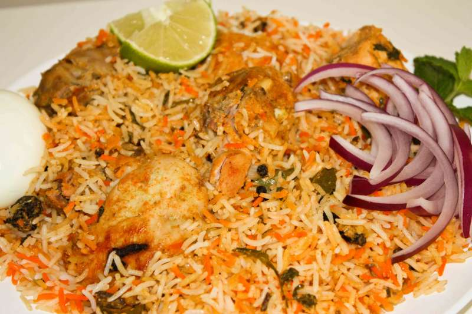
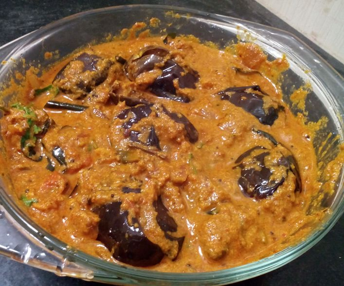
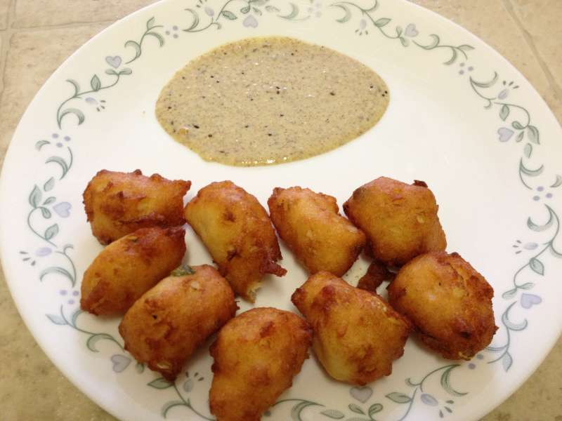
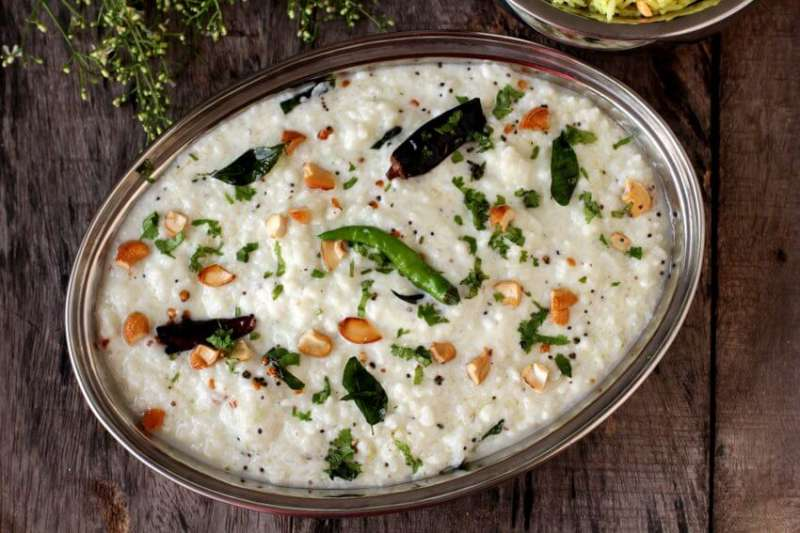
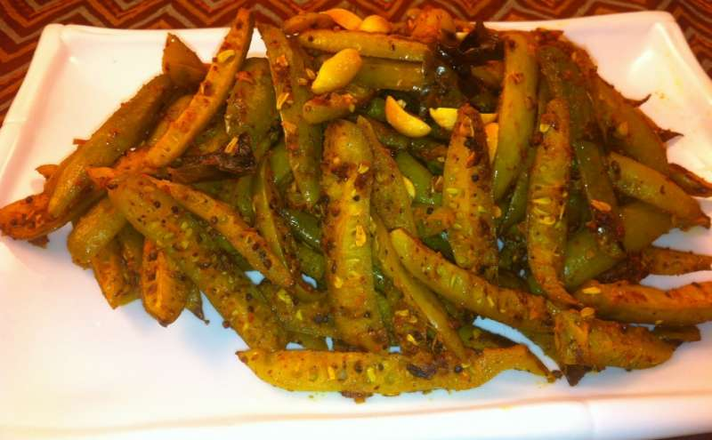
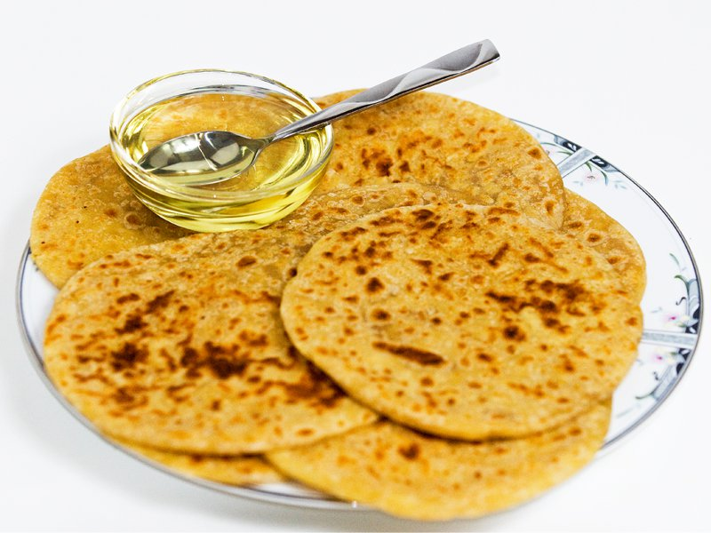

Food of Andhra Pradesh:Andhra Pradesh is known for its spicy food all around the country. The inspiration behind such delicious variations of food lies in the opulent culture of the state, where exotic food is being prepared in the kitchen of the Nawabs since the year of its origin. The Andhra cuisine comprises of both mouth-watering vegetarian and non-vegetarian dishes. The famous Hyderabadi dishes include appetising Biryanis, delectable rice and some tangy pickles and chutneys.
1. Pulihora:An exotic version of tamarind rice, also known as Chitrannam, is enriched with spicy flavours to give it a sour and salty taste at the same time. One of the main ingredients is tamarind along with curry leaves, tomatoes, and mustard seeds. Pulihora finds its place in kitchens often during festivities and special gatherings. Try the authentic tamarind rice to get a taste of real Andhra cuisine.
2. Chepa Pulusu:A variety of fish curry, popularly known as Chepa Pulusu in the state of Andhra is a hot piquant dish with fish tossed in tamarind sauce and assorted with spicy flavourings and tamarind juice to give it a die-for taste. Prepared using a generous amount of oil and spicy herbs, this fish curry leaves you wanting for even more. The traditional fish gravy can be found in any restaurant serving Andhra cuisine.

3. Gongura Pickle Ambadi:If you love the tangy taste of every pickle then you must try this fiery spicy pickle made with Ambadi leaves, otherwise known as Sorrel leaves. This tasty pickle-chutney hybrid is widely prepared in Andhra as well as in the state of Maharashtra. Well-blended with a variety of spices, this special Andhra dish can be served with flavoured rice or a pair of hot chapatis.
4. Pesarattu:Pesarattu is prepared often for breakfasts in Andhra and regions nearby. The yummy dosa made with green moong dal is a zesty Dosa variant, loved by everyone in the state. The moong dal Dosa is served commonly with coconut chutney or chilli-tomato chutney. Visit one of the authentic Andhra food corners to get a taste of the native Pesarattu flavour.
5. Andhra Chicken BiryaniThe state that gave a whole new definition and taste to Biryani is famous for giving birth to some of the most palatable Biryani and Pulao recipes. The original mouth-watering Andhra Chicken Biryani uses a rich combination of aromatic herbs and spices to give the long thin rice grains, a succulent taste. Tossed vegetables are mixed with Chicken to bring the taste it is best known for. Try the Andhra Chicken Biryani for your lunch to have a juicy fulfilling experience.
6. Gutti Vankaya KooraPrepared by using stuffed eggplant, this curry is a special Andhra dish cooked in every other house in Andhra. The tender eggplants are stuffed with roasted spicy herbs and seasonings to give to a perfect delicious taste. The curry is thick and gives a fresh smell of tamarind and mustard seeds, that will lure you from even a distance. It can be served with aromatic rice or ghee Rotis.
7. Punugulu:Who isn’t fond of a crunchy crispy snack during rainy evenings? Next time when you crave for a delicious snack to eat with your cup of coffee, try the popular yet simple Andhra snack, Punugulu. Prepared with Idli batter and deep fried till golden brown, the mouth-watering snack is served with coconut ginger chutney for a perfect lip-smacking taste.
8. Curd Rice:No Andhra meal is complete without a serving of the light yet yummy curd rice! Widely popular in Andhra as well as Tamil Nadu, Karnataka, and Kerala, curd rice is loved by anyone who gets the taste of it. It can be easily prepared at homes by using a simple recipe with unsweetened curd, rice, and assorted vegetables. To give it a fine taste, it is often blended with ginger, chopped green chillies and curry leaves. The best part of curd rice that gives it a tangy salty taste is the Tadka seasoned using cumin seeds, mustard seeds, and urad dal. It is also extremely digestible and carries plenty of health benefits.
9. Dondakaya Fry:For all those gourmet out there, who seek homestyle recipes of Andhra, your search ends at this delicious dish. The Dondakaya Fry is a stir fry item, prepared with IvyGuord curry, also known as Parwal, Kundru, and Tondli in other languages of the country. The healthy dish is enriched with vitamins and boasts of being an amazing body detoxifier. It is prepared with nuts and spices that give it a crispy nutty taste. It can be served with hot roti or rice and rasam.
10. Bobbatlu:If you think the Andhra cuisine is all about tangy spices and fiery chillies, then you couldn’t have been more wrong! They also have delicious items for those with a sweet tooth. Bobbatlu, also known as Puran Poli, is an all time favourite classic sweet dish prepared commonly in Andhra Pradesh and Maharashtra. It is considered to be very pious and is extensively prepared during important festivals and celebrations. The outer layer is prepared with wheat flour or refined flour and the inside stuffing is made with lentils and jaggery giving it a delicate and inviting taste.
12. Uppindi:Not all dishes need to be given hours of time to prepare. Some of them are rightly termed as the Bachelor’s diet and can be cooked in a couple of minutes and yet taste amazing! Uppindi or Arisi Upma, as many call it, is a popular Rava Upma dish which is easy as well as fast to prepare. It can be cooked right at your home, during those crazy rush mornings while going off to work. It is made using Rava, peanuts and different varieties of spices to give it a tasteful punch.